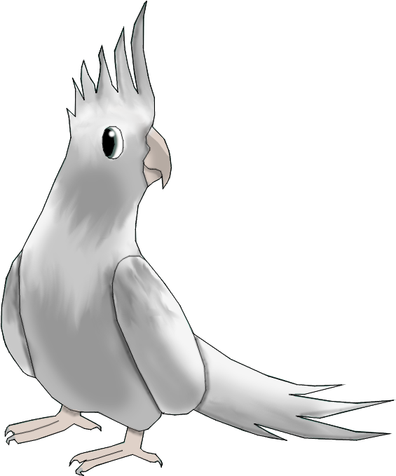

Announcement of 1/2/2021, Vote for the new name of Deroe!
A disagreement between me and my friend is going hard, and
It's on the NEW NAME OF THE WEBSITE!
Mustafa's opinion: "The website should be renamed to MM Books because everything
that is hosted by deroe is my books!"
My opinion: "The name of Deroe should stay the same because consistency is key!"
Jumbo's opinion: "Should be turtoi because I love turtles."
Vote here!
Side note: Voting ends in 5 of February, 2021.
Journal Post #0001 (Part 1)
1/2/2021
Well it's finally here, a public journal!
On the time of reading this I am trying to
write in proper grammar because my family
would be proud, English is my second language.
But I have issues with writing in my native language,
Arabic. Speaking of that, I just realised. My brother's
birthday is coming very soon! On Valentines day in fact.
Well I guess I should prepare myself a surprise for him. Also,
I'm thinking about deleting S-BITEZ because I'm too lazy to
make it. Or maybe add the wikis to one page or something but
I guess it's alot to unpack.
Journal Post #0001 (Part 2)
1/2/2021
Unpacking litterally everything out here, and by everything
I mean a third of the unpacking. But at least I did some work.
This journal post is also a part of the previous one, (obviously)
And no, I'm not deleting S-BITEZ or putting thw wikis in one page.
Anyways, my friend believes I should rename Deroe CD to "MM books"
because the only thing hosted on deroe is his books so soon in a bit
I'm making a petition and you can sign it!
Journal Post #0002
3/2/2020
A few days till Valentine's Day(my younger brother's Birthday), my brother is not important
anymore and having a 2 things day feels like a stretch. On one side, It's my brother and on
the other side is true love. Usually this decision isn't a problem because I don't have a
person for Valentine's day. This time I want to strike my first time in because I've never
done it before, but I don't know who, and I fear rejection. Might just quit it and find a
present for my brother. You know what, this gives me an idea! I should look for a present for
my brother and if I ever find a person I like during the search, maybe I'll try and keep that
as a target for next year. For now I'll leave it to my brother's birthday.

You scrolled down deep! Take a break from your screen to save your retina cells.